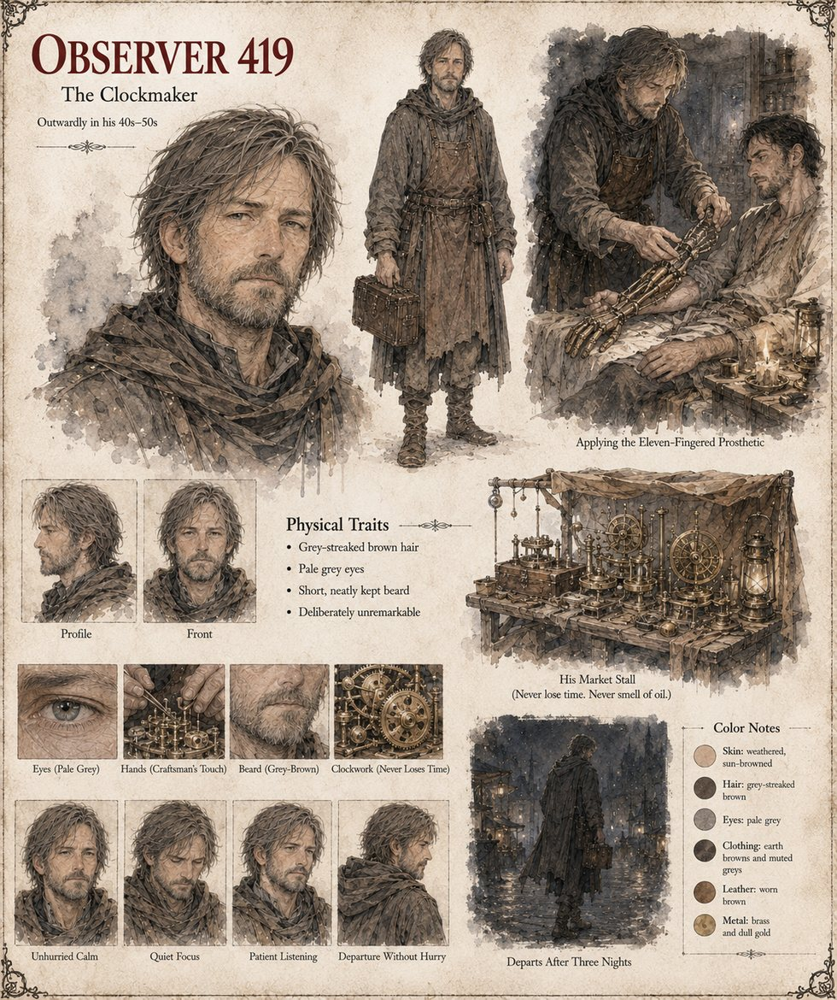

Observer 419
Envoy/Observer, Case 1,153 · publicly a clockmaker · also the Observer of Case 2,140 · outwardly 40s–50s
The same field agent of the Cultivators who installs a single grey sphere in a county mill in Case 2140, posted next to Tavgora, where he has kept a stall in the lower market for thirteen weeks by the morning of the Proving: small brass instruments that run for years without a smell of oil. He watches the Proving from the back of the crowd and files his report that evening, recommending a Tier 1000-series functional intervention and flagging the prince's temperament as an unusually favorable variable. What he does not write down is that he felt recognition, the second posting running in which the feeling arrived before there were grounds for it.
He asks the King for an audience, offers craft rather than sorcery, and asks only that no one keep him in Tavgora once the work is done. His one instruction to Levan is the only thing he ever says to him that anyone overhears. His posting formally ends the morning after the graft; he does not travel far. For eighteen years he watches from a rented room two valleys away, files a note on the ruling in which he finds himself, against every manual, glad, and on the night the city falls stands on the ridge above the western road and logs a column of twelve leaving by a goat track. He notes the lute, and files nothing about it. The sheet draws him in earth browns with grey-streaked brown hair, pale grey eyes and a short, neatly kept beard, deliberately unremarkable.
“This will not make you whole. It will make you capable. They are not the same, and you would do well to remember which one your doctrine actually asks for.”
Appears In

Related Subjects


Related Records

The clockmaker's stall in Tavgora's lower market: small brass instruments that run for years without a smell of oil, sold to a court that mostly tells time by bells. He has kept it for thirteen weeks by the morning of the Proving.

Over three nights the clockmaker works on Levan's ruined hand while the two physicians present, sworn to silence, keep that oath more faithfully than any other they swear. No blood after the first hour, no fever after the second night: by the third morning, a hand lying pale and still on the pillow, too regular, too considered.